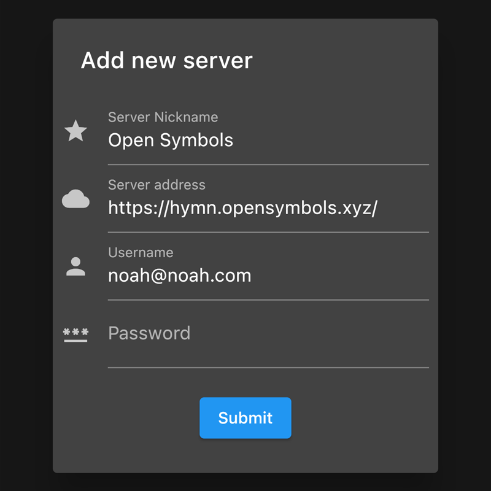

Manga
Enter login information.
On the Library tab, hit the settings icon in the top right.
Select OPDS.

Enter an Alias for the server.
For host, enter: https://hymn.opensymbols.xyz/opds/v1.2/catalog
Skip Port.
Enter your username and password.
Hit apply.
Open Symbols is now available in the Library tab. To stream from the server, click Open Symbols under the Libraries section. To download, click Open Symbols under the Import Services section.
Select the Plus button at the bottom right.
Enter a name for the server.
For Server Address, enter: https://hymn.opensymbols.xyz/.
Enter your login information.
Hit submit.
Go to https://framboisepi.github.io/paperback-extensions/komga/
Press Add to Paperback
Press Open
Press Add as Source Repo.
Press Browse Lemon's Extensions.
Press Install.
Press Back.
Press Komga under Enabled Extensions.
Press Server Settings under Source Settings.
For Server Address, enter: https://hymn.opensymbols.xyz/.
Enter login information.
Press Save.
The server is now available on the front page.
Switch to the Browse page located at the bottom.
Switch to the Extensions tab at the top.
Scroll till you find the Komga extension.
Press Install.
Once installed, press Settings.

Deselect Komga (2) (ALL) and Komga (2) (ALL).
Press Cog icon next to .
For Address, enter: https://hymn.opensymbols.xyz.
Note that there is no trailing slash (/).
Enter login information.
Restart Tachiyomi.
The server is now available under the Browse page.